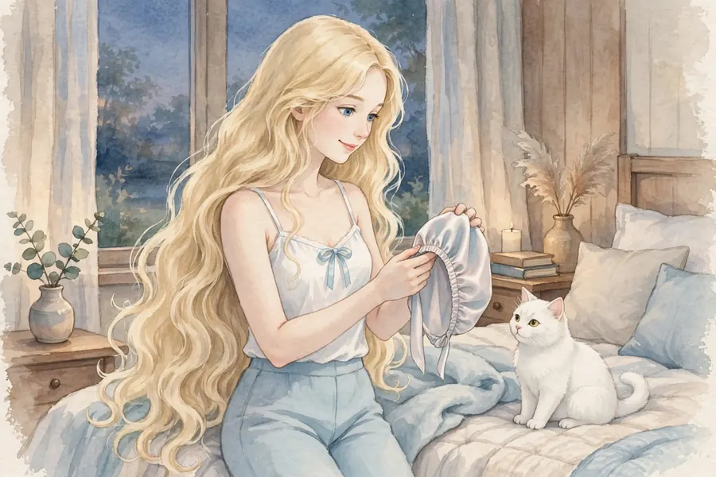

トップ ＞ ヘアケア ＞ ナイトキャップと就寝時の髪の保護アイテム
ナイトキャップと就寝時の髪の保護アイテム

朝起きたときの髪の広がりや、寝ぐせの直しにくさに悩むお客様から、「寝ている間に何かできることはあるか」と聞かれることがあります。寝ている間の髪は、枕との摩擦や、寝返りの動きで、思っている以上に負担がかかっています。ナイトキャップは、その摩擦を減らすための道具のひとつです。この記事では、ナイトキャップをはじめとする、就寝時の髪の保護アイテムの選び方と使い方を整理します。特定の商品の話ではなく、寝ている間の髪の扱い方の考え方です。
寝ている間に髪に起きていること
寝ている間、髪は枕に押しつけられた状態で、何度も寝返りを打ちます。そのたびに髪と枕の間で摩擦が起きています。特に、髪が長い方や、寝相が変わりやすい方は、朝起きたときに髪が絡まったり、片側だけ広がったりすることがあります。乾燥する季節は、静電気も重なって、髪が広がりやすくなります。
摩擦が続くと、髪の表面が荒れやすくなります。髪の表面は、うろこ状の層で覆われていて、摩擦が重なると、その層がめくれやすくなると言われています。層がめくれると、髪の手触りが変わったり、絡まりやすくなったりします。寝ている間の摩擦を減らすことは、朝の髪の扱いやすさにもつながります。まずは、寝ている間に髪がどうなっているかを意識することが、保護アイテムを選ぶ出発点です。
ナイトキャップの種類と表示の見方
ナイトキャップは、寝るときに髪を包むようにかぶるキャップです。素材は、シルクやサテン、綿などがあります。シルクやサテンは、表面がなめらかで摩擦が起きにくい、と言われています。綿は吸水性があり、汗をかきやすい方に向いています。素材の表示は、パッケージや商品のタグに書かれているので、購入前に確認します。素材の名前だけでなく、「シルク100％」なのか、ほかの素材との混紡なのか、という表示も見ます。
サイズとゴムの具合も、選ぶときの確認点です。キャップが小さすぎると、髪がはみ出したり、ゴムがきつくて寝ている間にずれたりします。大きすぎると、寝返りのたびに脱げてしまいます。ゴムの部分が、頭に跡がつくほどきつい場合は、サイズが合っていない可能性があります。髪の量が多い方は、ロングヘア用の大きめのサイズがあるかどうかを確認します。洗濯の表示も、購入前に見ておきます。手洗いが必要なものもあれば、洗濯機で洗えるものもあります。素材によって手入れの方法が違うので、自分の生活に合うものを選びます。
キャップ以外の方法と、手入れ・替えどき
ナイトキャップ以外にも、寝ている間の髪を守る方法があります。枕カバーを、なめらかな素材のものに変える方法です。シルクやサテンの枕カバーは、髪と枕の間の摩擦を減らす、と言われています。キャップが苦手な方は、枕カバーから試してみるのもひとつの方法です。髪をゆるくまとめて寝る方法もあります。ゆるい三つ編みや、低い位置でのお団子にして、髪が広がらないようにします。きつく結ぶと、髪に負担がかかるので、ゆるくまとめるのが基本です。
ナイトキャップの手入れは、素材の表示に従います。シルクのものは、手洗いが案内されていることが多いです。洗ったあとは、直射日光を避けて、陰干しします。替えどきの目安は、ゴムが伸びてきたり、生地が薄くなってきたりしたときです。ゴムが伸びると、寝ている間にずれやすくなります。洗濯を繰り返して生地のなめらかさが落ちてきたと感じたときも、替えどきのサインです。寝ぐせや髪の広がりが続く場合は、髪の状態に合った方法を、美容師さんに相談してみてください。この記事は就寝時の髪の保護アイテムの案内であり、商品ごとに表示がある場合は、そちらが優先です。

セラフィナ「朝の寝ぐせは、夜の摩擦から。寝る前のひと手間が、朝の時間を決めるよ」

セラフィナ｜美容の道具箱の案内役
「量と表示が分かれば、美容は失敗しない。」——セラフィナと白猫のモコが、買う前のチェックポイントを案内します。綺麗になりたい気持ちに正直に、でも表示は冷静に読むのが、このサイトの約束です。